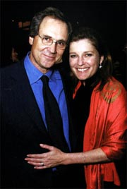
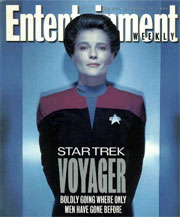
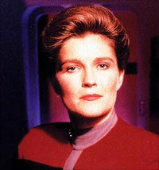
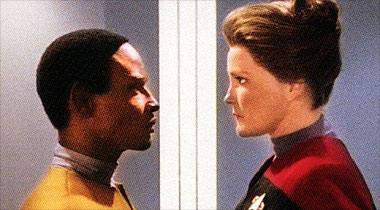
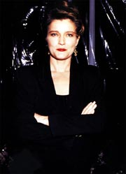
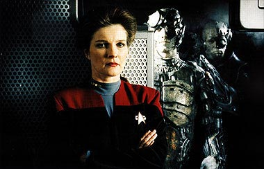

|

Publicado em
4 de novembro de 2002

A corrida pela capit
de Voyager
Com a desistncia de Genevive
Bujold j nas filmagens, os produtores tiveram de correr para achar a
substituta: Kate Mulgrew

|
Aps o fiasco que foi a contratao de Genevive Bujold para ser a protagonista de
Voyager, os produtores Rick Berman, Michael Piller e Jeri Taylor tiveram de descascar um enorme abacaxi. Em que lugar encontrariam to rapidamente uma nova atriz para interpretar a personagem sem cometer o mesmo erro da primeira vez?     Foi graas ao ator John DeLancie, antigo amigo de Mulgrew, que ela teve o primeiro contato com Jornada nas Estrelas. Kate conta que DeLancie a fazia assistir a todos os episdios em que Q, seu onipotente personagem, aparecia. "Eu assistia aos episdios da Nova Gerao e um de Deep Space Nine em que John participava, e ficava imaginando como eles conseguiam ter roteiros to bons e atuaes to incrveis dos atores. O nvel estava l em cima. Agora que estou em Voyager posso dizer que todos se esmeram ao mximo para ter o melhor. O nvel dos programas alto, pois a cobrana tem o mesmo patamar, sem contar que a infra-estrutura fantstica", declara Kate, que teve a chance de trabalhar com John DeLancie em trs episdios de Voyager.  Kate conta que encontrou-se uma vez com a ex-primeira-dama norte-americana Hillary Clinton, hoje senadora, e ela lhe disse que seu trabalho como primeira-dama era de extrema importncia como um modelo a ser seguido, tanto que cada ato seu poderia servir de inspirao a muitas mulheres. Segundo Mulgrew seu papel como a capit de Voyager segue quase a mesma linha, j que muitas garotas de 17, 18 anos de idade chegam a ela e contam que pretendem estudar em locais como o MIT (Massachusetts Institute of Technology), por exemplo, para alcanarem cargos importantes e mostrar a fora das mulheres. Sobre a capit, Kate diz que "ela muito forte e est sempre em movimento. Os diretores quiseram me fixar na cadeira de capit, mas eu disse 'sem cadeira para mim'. Janeway nunca senta, ela se move muito, pois no consegue ficar parada, tem muita energia. Ela quer descer aos planetas com o grupo avanado, sempre quer estar em p na frente da tela principal da ponte, sempre quer saber e se meter em tudo o que est acontecendo a seu redor."O fato que esse "Kirk de saias" conseguiu vrias coisas nos sete anos de Voyager, como arrumar um penteado bem melhor do que o das primeiras temporadas (e que rendeu alguns Emmys nesse quesito para a srie) e trazer de volta para a Terra uma USS Voyager at melhorada tecnologicamente em relao que partiu de Deep Space Nine rumo s Badlands no episdio-piloto. Mesmo que para isso tenha tido que voltar no tempo, bater de frente com Borgs, Hyrogens, Kazons, criaturas em CGI ou at uma Kes revoltada em um momento infeliz das ltimas temporadas, e no ter tido a chance de desenvolver um relacionamento ntimo com algum, embora seu primeiro-oficial estivesse sempre como o primeiro da lista.  Relembrando tudo o que Kathryn Janeway significou para Voyager, todos os fs de Jornada nas Estrelas tm de levantar a mo ao cu e agradecer por Genevive Bujold ser uma "estrela" e Kate Mulgrew ser uma profissional.
|